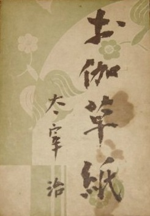

No Longer Human
- Preview
- No Longer Human (Japanese: 人間失格, Hepburn: Ningen Shikkaku), also translated as A Shameful Life, is a 1948 novel by Japanese author Osamu Dazai. It tells the story of a troubled man incapable of revealing his true self to others, and who, instead, maintains a facade of hollow jocularity, later turning to a life of alcoholism and drug abuse before his final disappearance. The original title translates as "Disqualified as a human being" or "A failed human".
- Plot
- No Longer Human is told in the form of notebooks left behind by the principal character Ōba Yōzō (大庭葉蔵). These are divided into three chapters which chronicle Ōba's life from his early childhood to his late twenties. The notebooks are bookended by a preface and an epilogue by a nameless narrator, who is given Ōba's notebooks by a mutual acquaintance ten years after they had been written.

The Setting Sun
- Preview
- The Setting Sun (斜陽, Shayō) is a Japanese novel by Osamu Dazai first published in 1947. The story centers on an aristocratic family in decline and crisis during the early years after World War II.
- Plot
- Twenty-nine-year-old Kazuko, her brother Naoji, and their widowed mother are members of an impoverished aristocratic family living in post-war Tokyo. Kazuko had been married, but divorced and returned to the family household after claiming that she had had an extramarital affair with a painter she admired. The child she had been expecting was stillborn. Naoji, who served with the military in the South Pacific, is declared missing. Kazuko recalls a time when she burned snake eggs, thinking that they were viper eggs. It is revealed that at the time of Kazuko's father's death, there were many snakes present in and around the house, which therefore have become ominous in her and her mother's eyes.

Otogi-zōshi
- Preview
- Otogi-zōshi (お伽草紙) is a Japanese collection of short stories by Osamu Dazai. In this work, the author is giving the reader a reinterpretation of classic Japanese fairy tales such as Urashima Taro, Tanuki and the Rabbit, Tale of a man with a wen and the Tongue-cut Sparrow, and gives the characters a new dimension which go against the national spirit which the Imperial Japanese Government was trying to foster.
The title itself is reference to Otogi-zōshi, a group of about 350 Japanese prose narratives, in which many of the stories Osamu Dazai has written of here appear. - Plot
- Otogi-zōshi is a series of four fairy tales told by a father to his child, while they are hiding in a trench serving as bomb shelter during the 1945 air raids of Tokyo.